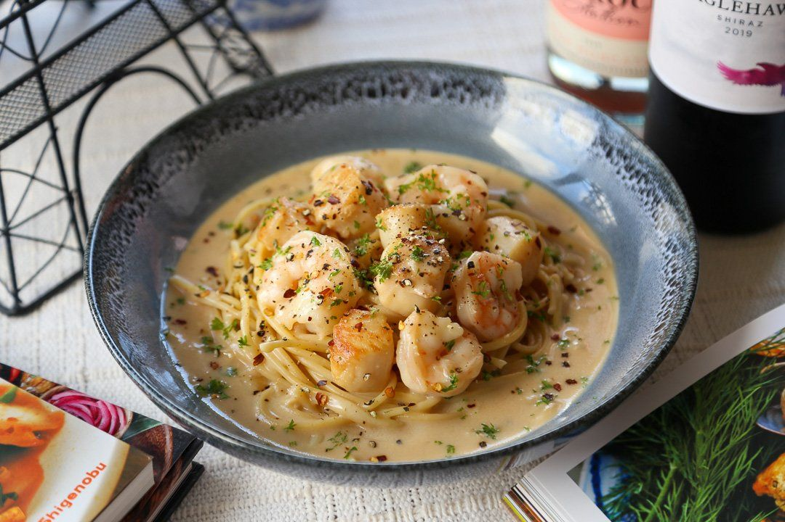

<-Back
Creamy Seafood Pasta

How to Cook
Ingredients
- 8 Large Tiger Prawn
- 4 Large Scallops (Frozen)
- 1 squid
- 6 cloves of garlic
- 280g of pasta
- cooking wine
- a stick of butter
- half a cup of cream
- Corriander
- salt
- pepper
Steps
- Deshell the prawns and keeps the head. Clean the squid and cut into pieces. Defrost the scallop in a bowl and keep the liquid that comes out from it.
- Fry the prawn shells with oil, then add water to the shells and let it boil for around 20 minutes to create a prawn broth
- Cook the pasta as per instructions. Save the pasta water
- Fry each seafood item individually with oil,salt and pepper. For all seafood, cook until sear appears.
- Add butter, garlic into the pan. Add cooking wine as well to deglaze the pan.
- Add scallop water,prawn broth and cream to the pan. Reduce until creamy, or add cornstarch to thicken.
- Add in the seafood and Corriander
- Add in Pasta and mix well before serving